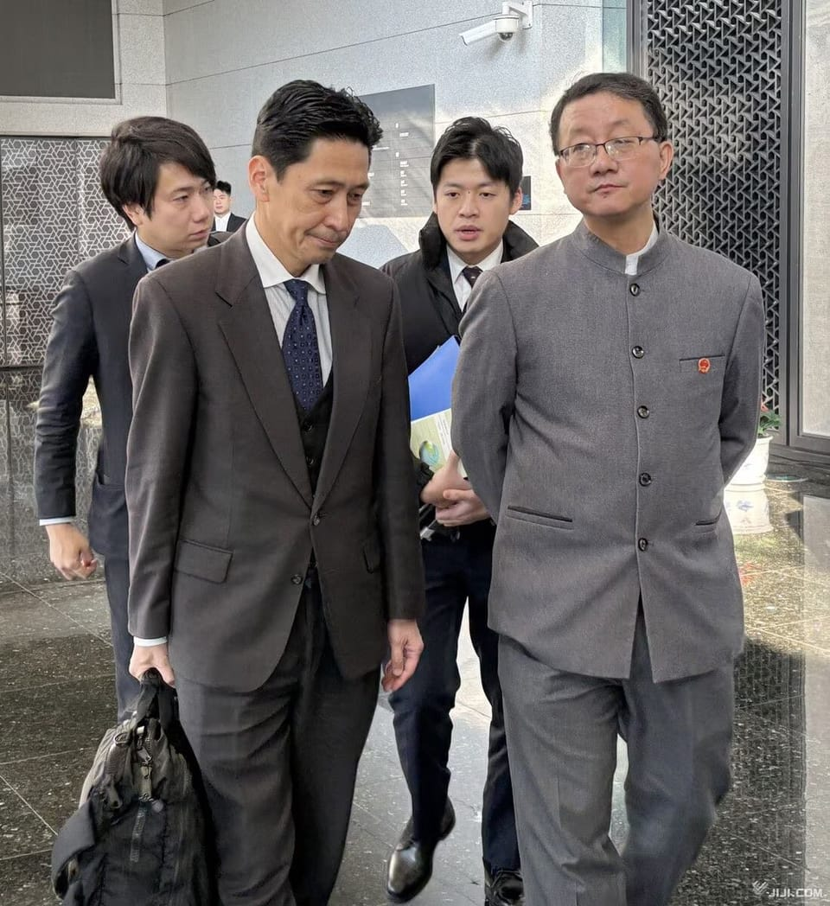

世界苦茶11月19日新闻 | 42条 | 中日外交磋商未破冰

中日外交磋商未破冰 | Google发布Gemini3模型 | Cloudflare发生全球故障 | Meta赢得反垄断诉讼
苦茶数据
美元兑人民币：7.11（昨日7.11，前日7.10）
美元兑日元：155.52（昨日155.02，前日154.65）
上证指数：3942（昨日3947，前日3973)
标普500指数：6617（昨日6672，前日6734）
比特币：92581（昨日90105，前日95027）
布伦特原油：64.61（昨日63.76，前日63.87）
中国新闻
• 中日外交磋商未破冰 紧张局势料将持续。
中日外交官员星期二的磋商未能缓解两国紧张关系。受访学者预计，中日僵局还会持续一段时间，直到日本展现更明确的妥协姿态。日本外交部亚洲大洋洲局长金井正彰星期二在北京与中国外交部亚洲司司长刘劲松举行磋商。现场视频显示，金井正彰下午2时左右神情凝重地离开中国外交部，走在他身旁的刘劲松则一路双手插兜。日本放送协会报道，刘劲松被问及磋商结果时说“当然不满意”，并指磋商气氛严肃。中国外交部发言人毛宁当天下午在例行记者会上介绍，中国在磋商中就日本首相高市早苗“涉华错误言论”再次向日本提出严正交涉，指高市的谬论“从根本上损害中日关系政治基础，性质和影响极其恶劣，激起中国人民的公愤和谴责”。
• 日本大使馆提醒在华日本人落实安全对策。
日本驻华大使馆11月17日晚发出通知称，鉴于日中关系恶化，敦促在华日侨全面落实安全对策。通知要求在华日籍人士外出时警惕可疑人员靠近、留意周围环境，尽量结伴出行。| 日本驻华大使馆的网页截图 | 此次安全提醒的背景是，日本首相高市早苗就「台湾有事」在日本国会作出相关答辩，加之中国驻大坂总领事薛剑在社交平台发布相关留言后，中日双方对立态势升级。通知要求，尽量避免前往人员密集的广场及易被识别为日本人常去的场所。通知还呼吁尊重中国当地的习惯，与当地人士接触时注意言行和态度。特别要求带孩子时采取充分的应对措施。
• 中国“福建”号航母入役后完成首次训练演习。
中央电视台报道，自11月5日入列中国人民解放军海军以来，这艘“世界上最大的常规动力军舰”首次进行了“海上实兵训练”。报道说，训练中，“福建”号舰载机进行了多次弹射起飞和阻拦着舰，参与机型包括隐身战斗机J-35、海军战斗机J-15T、电子战飞机J-15DT以及预警控制机KJ-600。央视称，此次演训是“按照年度计划组织实施的常态化训练活动”，目的是“检验训练成果，增强部队维护中国主权、安全和发展利益的能力”。本周在社交媒体流传的卫星图像显示，“福建”号在南海航行，附近还可见另一艘解放军航母“山东”号。
• 美国小组称，中国利用印巴冲突检验军事优势。
美国两党美中经济与安全审查委员会的一份新报告直言不讳地指出：“北京机会主义地利用该冲突来测试并宣传其武器的先进性。” 报告强调了诸如HQ-9防空网络、PL-15超视距空对空导弹和歼-10C战机等系统的实战首秀，称这次冲突是“首次将中国现代武器系统用于实战，成为一次现实世界的田野试验”。委员会同时警告称，将该事件称为全面“代理人战争”可能夸大了中国的作用，但指出，在为期四天的冲突中巴基斯坦对印度的军事成功，在其“与印度持续的边境紧张关系和其不断扩展的国防工业目标”的背景下具有参考价值。中国驻华盛顿大使馆尚未立即对置评请求作出回应。
• 巴西批准中国海军访问，同时一艘美国科研船计划在附近停靠。
巴西已批准中国一艘海军医院船于明年一月停靠里约热内卢，结束了持续数月的审查，审查期间该国军方内部曾有低调反对。根据当地媒体报道，11月13日签发并于周二在政府公报上发布的批准文件允许“丝绸之路方舟”号于明年1月8日至1月15日在里约停留。该178米舰艇隶属于中国人民解放军海军。记录显示，同一周还有一艘美国船只计划靠泊。美国海洋学船“罗纳德·H·布朗号”获准于1月14日至1月21日在伯南布哥州苏阿佩停靠。该船以美国首任商务部长命名，是美国国家海洋与大气管理局舰队中最大的研究船，搭载用于研究海洋与大气相互作用的专用设备，为长期气候和天气研究提供数据，船上配备多种传感器和实验室，并常与其他美国及外国。
• 德语媒体：面对中国 德国几乎无牌可打。
《科隆城市报》发表评论称，在对华依赖日益加剧的大背景下，柏林在与北京的较量中已近乎毫无筹码。而此次克林拜尔的中国之行，就是这种无力感的展示。《法兰克福汇报》评论称，中国企业在德国进行战略布局的同时，德国经济界却严重缺乏战略眼光。《科隆城市报》评论称，基民盟籍外长推迟出访中国的行程之后，社民党籍的德国财政部长克林拜尔开始了北京之行，这本身就是一个非常微妙的外交动作。但更为糟糕的却是，这位财长在北京几乎没有任何可以讨价还价的筹码。
• 叙利亚外长访华之际 消息人士称叙计划向中国移交维吾尔人。
2025年11月18日两位消息人士近日向法新社透露，叙利亚计划将一些维吾尔族武装人员移交给北京，但叙利亚方面否认了这一报道。目前正值叙利亚外长希巴尼访华之际，据报道，他承诺与中国在反恐领域展开合作。叙利亚外长希巴尼周一首次访问中国，他与中国外长王毅举行了会谈。根据中国外交部网站信息，王毅表示：“‘东伊运’是联合国安理会认定的国际恐怖组织。叙方承诺不允许任何实体利用叙领土损害中国利益，中方对此表示赞赏，并希望叙方采取有效落实措施，为中叙关系平稳发展扫清安全上的障碍。” 中国官方表示，叙利亚过渡政府外长希巴尼称，“叙方重视中方安全关切。（翻評：敘利亞外交部否認了這個說法。）
印太新闻
• 港籍陆男吸收台湾六名现退役军官发展间谍组织。
一名拥有香港永久居民身份的中国大陆男子，被大陆情治单位吸收，多年来假借商务及观光活动到台湾发展间谍组织。台湾六名现役和退役军官协助这名男子收集机密资料，台湾高等检察署星期二依违反国家安全法等罪名，起诉七人并求处重刑。综合《联合报》、《自由时报》、ETtoday新闻云等台媒报道，台湾检调单位查出，68岁港籍男子丁小琥拥有湖南拓展集团董事长、长沙市人民代表大会民族华侨外事委员会委员的头衔，受中共中央军委政治部联络局南宁工作站指示，来台发展组织。据调查，丁小琥先吸收台湾陆军战备训练处退役中校王文豪，国防部参谋本部防空飞弹指挥部退役中校谭俊明，王文豪及谭俊明接着吸收陆军装甲兵指挥部士官长吕芳契。
• 最新民调：超过五成台湾民众不赞成赖清德执政方式。
最新民调显示，超过五成民众不赞成台湾总统赖清德的执政方式，不满意度已连续五个月高于满意度；赖清德内阁阁揆卓荣泰不满意度也达46.6%，连续八个月陷入低迷状态。民调机构台湾民意基金会星期二公布最新民调，其中针对赖清德上任一年多，民众“赞同或不赞同他处理国家大事的方式，包括重要人事安排与政策？”有10.2%非常赞同，27.7%还算赞同；24.5%不太赞同，25.7%一点也不赞同。另有8.4%没意见，3.5%不知道、拒答。换句话说，台湾最新民意显示，37.9%民众基本上赞同赖清德的执政方式；50.2%不赞同。不赞同比赞同多12.3个百分点，也是连续第五个月不赞同民意高于赞同。
• 图瓦卢总理：十分重视与台湾的特殊关系。
南太平洋岛国图瓦卢总理特奥星期二在台北表示，图瓦卢十分重视与台湾的“特殊关系”。正值中美在太平洋地区的地缘政治竞争日益激烈之际，特奥应台湾政府邀请，于11月17日至22日率团到台湾展开国是访问。图瓦卢是仅存12个与台湾保持正式外交关系的国家之一。综合台湾总统府新闻稿和路透社报道，台湾总统赖清德星期二偕同副总统萧美琴，在总统府与特奥进行双边会晤，并见证签署“台图团结共荣条约”、“台图多样化渔业合作协定”及“台图运动交流合作意向书”。特奥致辞时表示，图瓦卢十分重视与台湾的“特殊关系”，并称这“是建立在共同的民主价值观，相互信任和坚定合作的基础上”。
• 高市：日本最大的问题是人口减少。
日本政府11月18日设立了统括遏制人口减少政策的「人口战略本部」。在日本首相官邸举行的首次会议上，首相高市早苗强调称：「日本最大的问题是人口减少」。她指示担当阁僚采取少子化对策、社会保障改革和外国人政策等措施。| 日本政府设立「人口战略本部」并召开首次会议 | 高市还表示「为了实现任何人都能在自己选择的地区持续生活的社会，将综合推进人口减少对策」。人口问题横跨很多负责个别政策的府省厅。人口战略本部将发挥统筹指挥的作用。首次会议由日本官房长官木原稔、全世代型社会保障改革相城内实、经济安全保障相小野田纪美、儿童政策相黄川田仁志等人出席。
• 小野田纪美：打造没有不良外国人的日本。
接受采访的日本经济安保相小野田纪美 11月17日，日本经济安全保障相小野田纪美表示，关于外国人政策「要坚决应对部分外国人的违法及违规行为」。她同时兼任高市早苗政权新设立的「与外国人有序共生社会」的负责阁僚。她表示「要打造不良外国人不在日本的环境」。小野田纪美在接受《日本经济新闻》等媒体采访时称，关于限制外国人获取土地的问题，「包括境外获取在内，将努力迅速掌握交易的实际情况」。计划2026年1月制定政策的基本方针。
• 从自行车到现金：印度竞选承诺成本攀升。
免费赠品正在推动印度的选举胜利，但各邦能否承受得起？多年来，在这个世界最大民主国家竞争激烈的政治舞台上，赠予形式各异。选民曾被电视机、自行车、有时甚至金饰所吸引——模糊了福利经济与选前民粹主义的界限。近年来，尤其面向女性的现金转移成为各党派普遍采用的赢选策略。上周，印度最贫穷的东部邦比哈尔邦一联盟在大选中大胜，部分原因被归功于向该邦女性发放的一万卢比现金补助。创纪录数量的女性参与投票。莫迪领导的党在去年的马哈拉施特拉邦等地投票前也推出了类似面向女性的经济支持计划。反对党在一些邦的选举前也承诺了类似方案。
科技新闻
• Cloudflare 故障导致 ChatGPT、X 及其他互联网服务中断。
Cloudflare 解决导致数千服务中断的问题，影响包括 ChatGPT、X 等 一家广泛使用的互联网基础设施公司表示，已解决一项导致从 ChatGPT、在线游戏《英雄联盟》到新泽西交通系统等用户服务中断的问题。美东时间下午12:44，Cloudflare 表示其工程师已不再发现困扰客户的部分问题，但仍在持续监测是否有进一步异常。周二出现故障的其他平台包括社交媒体网站 X，Shopify，Dropbox，Coinbase 以及穆迪的信用评级服务。穆迪网站显示错误代码 500，并提示用户访问 Cloudflare 网站获取更多信息
• 诉讼称 Roblox 危及儿童。
如果 Roblox 用户想在该在线游戏平台上聊天，他们很快就必须通过提供政府颁发的身份证件或让人工智能年龄评估工具拍摄面部照片来验证年龄。此举正值该平台面临一系列诉讼及其他指控之际，指控称其使性犯罪者得以与儿童建立联系并对其实施虐待。Roblox 表示，更新后的政策将更容易阻止年轻用户与成年陌生人联系。Roblox 是一个用户可以创建和游玩在线游戏并相互互动的平台。与许多其他在线平台不同，Roblox 允许 13 岁以下用户使用，该平台长期以来宣称自己是儿童学习编程的有趣方式。它在全球拥有超过 1.5 亿用户，其中三分之一不到 13 岁。但在有报道指出儿童在 Roblox 上被诱导，虐待。
• 半导体设备或进入需求急增的超级周期。
日美欧10家大型半导体制造设备企业2025年7～9月的财报全部出炉，整体净利润同比增长19%，达到93亿美元。利润连续6个季度增长。有观点认为半导体设备将进入需求快速增长的「超级周期」，但也有人担心AI数据中心投资过热。10家企业分别是荷兰阿斯麦控股，荷兰ASM International，美国应用材料，美国泛林集团，美国KLA ，美国泰瑞达，日本Tokyo Electron，日本SCREEN控股，日本爱德万测试，日本迪思科。其中8家企业营收增长。
• 法官在反垄断案中支持Meta，决定不剥离WhatsApp和Instagram。
周二，一位联邦法官裁定支持Meta，驳回联邦贸易委员会提出的反垄断诉讼。FTC指控这家社交媒体巨头通过收购新兴竞争对手压制竞争、巩固垄断地位。五年前FTC对Meta提起诉讼，称其存在反竞争行为，这是迄今对这家全球最有影响力的社交媒体公司发起的最大法律挑战。该案源自特朗普政府初期启动的一项调查。FTC在诉讼中称，Facebook于2012年收购Instagram，2014年收购WhatsApp时出价过高，目的是通过“收购或埋葬”的策略消除竞争对手，保护其在社交网络领域的所谓垄断地位。FTC主张，解决Meta所谓垄断势力的唯一办法是将公司拆分。
• 谷歌正式推出 Gemini 3 系列模型。
谷歌今天推出了 Gemini 3 系列模型，它以突破性的 1501 Elo 分数位居 LMArena 排行榜榜首。它在 Humanity’s Last Exam（得分 37.5%）和 GPQA Diamond（得分 91.9%）中均取得了最高分，展现了博士级别的推理能力。Gemini 3 还能更精准地理解请求背后的上下文和意图，无需过多提示即可获得所需信息。Gemini 3 将于今日登陆 Gemini 应用、AI Studio 和 Vertex AI 的开发者平台，搜索中的 AI 模式，以及全新的智能体开发平台 Google Antigravity。 谷歌还将推出 Gemini 3 Deep Think 增强的推理模式，可进一步提升 Gemini 3 的性能，未来将向 Google AI Ultra 订阅用户开放。Gemini 3 Deep Think 在 Humanity’s Last Exam（得分 41.0%）和 GPQA Diamond（得分 93.8%）上的表现均优于 Gemini 3 Pro 本已令人瞩目的成绩。
经济新闻
• 台湾修订出口管制清单 新增先进半导体设备等三大类。
全球半导体产业不确定性加剧之际，台湾拟增加对高科技货品出口管制的项目，包括高阶3D打印设备、先进半导体设备、量子电脑等三类产品，将列入管制清单。台湾经济部星期一在官网预告修订战略性高科技货品出口管制清单，预告期为60天，未来台湾厂商如想出口，必须事先向台湾贸易署申请战略性高科技货品输出许可。本次修订新增高科技管制项目涵盖三大类共18项，其中，先进半导体设备包括互补金属氧化物半导体集成电路、低温冷却系统、扫描电子显微镜设备、低温晶圆测试设备等半导体相关设备。台湾贸易署指出，厂商申请输出许可后，如果贸易署审核该出口交易无武器扩散风险，将核发输出许可。
• 中国大量采购美国大豆 但价格高昂。
知情的交易员透露，中国星期一至少采购14船货美国大豆，这是自今年1月以来最大的一笔采购，也是自美国总统特朗普和中国国家主席习近平10月举行峰会以来最重要的一次采购。路透社引述两名亚洲贸易商称，美国大豆的报价虽然高于巴西，但中国仍采购美国大豆，以履行在韩国釜山中美峰会上对华盛顿作出的承诺。一名新加坡贸易商说：“中国这波更大规模的美国大豆采购已不再是善意姿态，而是履行釜山协议条款的体现。” 两名知情者透露，中国国有粮食贸易商中粮集团至少采购84万吨美国大豆，计划在12月和明年1月装运。贸易商称，如果后续有更多交易敲定，最终的销售总量可能会更高。
• 特朗普政府向重启三哩岛核电站提供10亿美元贷款。
特朗普政府周二表示，已向星座能源公司提供10亿美元贷款，用于重启位于宾夕法尼亚，曾称为三哩岛的核反应堆。星座与微软在2024年底签署协议，重启这台835兆瓦的反应堆——该反应堆于2019年停运——以抵消微软数据中心的用电。电厂的另一机组已更名为克兰清洁能源中心，因1979年事故而停运，该事故曾使核电行业陷入寒冬。受人工智能等技术推动，美国电力需求正出现二十年来的首次增长。作为几乎零碳的能源，核能已成为对不间断电力有需求并做出气候承诺的科技公司的选项。批评者指出，美国尚未找到放射性废物的永久贮存方案。能源部贷款项目办公室负责人格雷格·比尔德表示，此次重启将支持PJM区域电网。
• iPhone在华销量激增 占据25%市场份额。
苹果公司的 iPhone 17 系列推动其在中国市场的月度智能手机销量增长37%，显示出这一关键市场的强劲势头。Counterpoint 的数据显示，十月份中国每售出四部智能手机中就有一部是iPhone，这是自2022年以来首次达到这一门槛。
• 在毕业生就业形势严峻的情况下，中国城镇青年失业率略有下降。
中国城市青年失业率在毕业生就业形势严峻的情况下小幅下降 尽管仍有创纪录数量的青年在激烈竞争中难以找到工作，更多人被迫寻求替代路径。国家统计局周二发布的数据显示，10月中国16至24岁青年失业率由9月的17.7%小幅下降至17.3%。在夏季有创纪录的1220万名毕业生进入就业市场后，8月青年失业率曾上升至自2023年修订将全日制学生剔除统计以来的最高水平。
•《鬼灭之刃:无限城篇》创日本电影全球票房纪录。
索尼集团旗下的Aniplex与东宝17日宣布，动画电影《鬼灭之刃：无限城篇 第一章 猗窝座再袭》的全球票房已达1063亿日元。具体来看，日本国内票房为 379亿日元，海外则在157个国家和地区合计获得684亿日元。虽然日本国内票房未能达到前作《鬼灭之刃：无限列车篇》超过 400亿日元的成绩，但凭借海外市场接近日本国内两倍的收入，成功突破1000亿日元大关。索尼集团CFO陶琳在11日的财报说明会上表示：“能够在海外取得如此高的票房，是一股巨大的文化力量，也让日本内容出版方获得了极大的自信”。
• 比特币刚刚回吐了今年的所有涨幅。
比特币和股票正经历一轮波动——投资者称更多动荡可能还在后头。周二美股收低，延续了近期下跌。道琼斯下跌499点，跌幅1.07%。标普500下跌0.83%。以科技股为主的纳斯达克综合指数下滑1.21%。标普500连续第四个交易日收低，为自八月以来最长的连续下跌纪录。就在六周前还创下超过126，000美元的历史高位后，比特币已暴跌逾26%。周二下午，该加密货币交易价格略低于93，000美元，抹去了今年以来的全部涨幅。周一晚间比特币曾七个月来首次跌破90，000美元，周二早盘则回升收窄部分跌幅。
• 美国小组敦促成立新的经济国家战略机构，以应对中国日益增强的科技挑战。
美国专家小组敦促设立新的“经济国策”机构，应对中国日益增长的科技挑战 美国国会下属的一个重要中国政策咨询机构周二敦促国会设立一个“合并的经济国策实体”，以应对中国在规避美国出口管制和制裁方面的“系统性和持续性”行为所带来的技术及其他国家安全挑战。“该建议针对的是出口管制和制裁在书面规定与实际执行之间存在的严重缺口，认识到中国和俄罗斯继续成功规避现有防护措施，而美国的技术优势正在侵蚀，”美中经济与安全审查委员会在其年度报告中表示。
俄乌战争
• 报告称，由于北约物资被调拨给以色列用于轰炸加沙，运往乌克兰的TNT运输岌岌可危。
一份于11月18日发布的报告称，因弹药被转运到以色列用于对加沙的轰炸，来自北约盟友的TNT对乌克兰的供应受到影响。报告由巴勒斯坦青年运动发布。“根据初步报告，这批炸药本应运往乌克兰，但在2023年12月，美国政府宣布价值1.47亿美元的炮弹也将出售给以色列，”报告写道。TNT用于制造更大型弹药，包括急需的155毫米炮弹。由于欧洲只有波兰一家大型TNT工厂，随着需求上升，供应链承受压力。报告援引波兰国防部副部长切扎里·托姆奇克的话称，在美国和欧洲多家工厂关闭后，华盛顿已从波兰进口90%的TNT。
• 美国在战争期间将数十名移民遣返乌克兰。
一名乌克兰边境官员周二表示，美国本周将50名人员驱逐到乌克兰，这似乎是自该国与俄罗斯交战以来美国单次规模最大的此类驱逐。该航班于周一凌晨降落在靠近波兰边境的地点。根据美国移民与海关执法局公开追踪器中的最新数据，自俄罗斯在2022年发动入侵以来，ICE共驱逐了105名乌克兰人，其中2024年最后一季度有13人。乌克兰驻美大使奥尔哈·斯特凡尼希纳表示，特朗普政府最初拟在该航班上遣返80人。最初名单中还至少包括一名乌克兰此前无法确认具有公民身份的人。目前尚不清楚为何在原定80人中最终只有50人被遣返回乌克兰。
• 在腐败丑闻中，泽连斯基面临解雇高级助理耶尔马克的压力。
乌克兰总统弗拉基米尔·泽连斯基正面临巨大压力，被要求解雇其权势一时的高级顾问安德里·耶尔马克，原因是一场腐败丑闻，有可能演变为俄罗斯全面入侵以来该国最大的国内政治危机。据向POLITICO透露、参与基辅政治讨论的四位乌克兰高级官员表示，这股要求免去耶尔马克职务的压力部分来自泽连斯基所属的“人民公仆”党内部。危机似乎将在周四达到高潮，届时泽连斯基将与政府官员和议会议员举行关键会谈。耶尔马克掌管总统办公室，是一名手腕强硬的政治操盘手，自2019年泽连斯基上台以来在引领其执政方面发挥了关键作用，有人甚至视他为几乎相当于“联合总统”的人物。
• 五角大楼限制数月后，乌克兰确认对俄罗斯使用美制ATACMS导弹。
乌克兰总参谋部11月18日表示，在俄罗斯境内对军事目标使用了美国制造的ATACMS，此前数月五角大楼的审查程序实际上阻止了此类打击。报道称，此确认发生在美国国防部的一项审查程序赋予国防部长皮特·赫格塞斯权限，阻止乌克兰使用美制导弹对俄境内发动远程打击的几个月之后，这一限制自晚春以来实际上阻止了在俄境内使用ATACMS。《华尔街日报》在8月23日报道了这一情况。美国总统唐纳德·特朗普在8月21日表示，如果不允许乌克兰攻击俄罗斯，乌克兰“没有胜算”，并批评前美国总统乔·拜登不让基辅“反击，只让其防守”。尽管这是总参确认的首起ATACMS打击。
• 泽连斯基将在土耳其会见特朗普特使，旨在“加紧”和平谈判。
泽连斯基将在土耳其会见特朗普特使，旨在“加紧”和平谈判 美国特使史蒂夫·维特科夫将于周三在安卡拉与乌克兰总统弗拉基米尔·泽连斯基和土耳其总统雷杰普·塔伊普·埃尔多安一道出席会谈，乌克兰总统表示他希望“加紧”和平谈判。“全力把战争结束推近是乌克兰的首要任务，”泽连斯基说，并补充称努力还将集中在恢复囚犯交换上。土耳其与基辅和莫斯科均保持联系，过去曾主办双方的会谈。克里姆林宫发言人德米特里·佩斯科夫表示，预计不会有俄罗斯代表出席安卡拉的会议。他补充说，尽管目前“没有具体计划”让弗拉基米尔·普京与土耳其方面或与维特科夫通话，但俄罗斯总统“当然愿意对话”。
世界新闻
• 欧盟在推动COP30放弃化石燃料的行动中缺席。
在周二的联合国气候谈判中，欧盟明显缺席了要求明确摆脱化石燃料路径的82国阵营。在亚马逊城市贝伦上演的一幕戏剧中，数十国要求一份“路线图”，为它们摆脱化石燃料指明道路——将推动气候变化的化石燃料推到这一鲜少直接讨论该议题的联合国进程的前台。但自称气候领导者的欧盟并不在其列。
• 特朗普支持率创新低，压倒多数的美国人认为他处理生活成本和爱泼斯坦问题不当。
路透社/益普索的一项民调显示，特朗普的支持率跌至38%，是他第二个总统任期以来的最低点。美国民众对他在生活成本问题上的应对方式，以及他对性犯罪者爱泼斯坦案件相关处理感到不满。为期四天的民调于周一结束，背景是特朗普对共和党的控制力正出现削弱迹象。由共和党掌控的众议院周二通过了要求司法部公开爱泼斯坦相关档案的法案，数月来特朗普一直反对，但在他昔日国会中的亲密盟友玛乔丽·泰勒·格林的压力下，随着国会议员准备绕过总统推进法案，特朗普在周日改口支持。调查显示，特朗普的整体支持率相比11月初的另一轮路透社/益普索民调下降了两个百分点。特朗普在第二个任期开始时支持率为47%。自1月以来下滑9个百分点。
• 联邦上诉法院驳回特朗普对CNN的“毫无根据”诉讼。
联邦上诉法院驳回了唐纳德·特朗普总统试图恢复对CNN的诽谤诉讼的请求，称其论点“无根据”。这起于2022年的诉讼抗议CNN在谈及总统关于2020年选举被“窃取”的谎言时使用“the big lie”一词。周二，一个由三名法官组成的上诉小组维持了佛罗里达州法官在2023年的裁决，认为特朗普未能证明“虚假性”，而这是证明某人被诽谤的必要要素。法官写道，特朗普的行为——在他输掉2020年选举却声称自己获胜并试图继续掌权——“可被多种主观解读，包括CNN的解读”，因此“并非容易被证明为真或假的陈述”。由特朗普任命的凯文·纽瑟姆和伊丽莎白·布兰奇法官，以及由巴拉克·奥巴马任命的阿达尔贝托·乔丹法官写道。
• 特朗普政府的一项规则可能会进一步惩罚领取福利的移民。
特朗普政府拟进一步因使用福利而惩罚移民 美国公民及移民服务局欲扩大拜登政府时期的“公共负担”政策，可能进一步限制移民使用公共福利。这意味着移民使用的安全网项目，如补充营养援助计划或美国医疗保险，在决定是否授予他们进一步合法身份时，可能会被考虑在内。国土安全部官员本周发布了一项拟议新规，将于周三在《联邦登记册》上公布。该规拟废除拜登时期的公共负担版本，并扩大移民官员可考虑的公共福利范围，涵盖人们可能使用的任何社会或健康服务。“废止将恢复更广泛的酌情权以评估所有相关事实，并与长期政策一致，即在美外国人应自力更生，政府福利不应成为移民的激励，”该提案写道。
• 在美国加大压力之际，委内瑞拉总统马杜罗“准备谈判”。
随着美国加大施压，委内瑞拉领导人马杜罗表示“愿意对话” 随着美国对他施压加大，委内瑞拉领导人尼古拉斯·马杜罗表示愿意与特朗普政府代表进行面对面会谈。马杜罗的表态是在美国总统唐纳德·特朗普表示并未排除向该南美国家派遣地面部队数小时后作出的。特朗普政府指控马杜罗——其去年连任被许多国家斥为操纵选举——是一个毒品集团的头目。马杜罗否认该指控，并指责美国试图煽动战争以掌控委内瑞拉的石油储备。自一月特朗普宣誓就职第二个任期以来，美国政府对马杜罗的压力不断增加。美国将悬赏他被捕线索的金额翻倍至5000万美元，并在八月发起了一项反毒品行动。
• 委内瑞拉女子 语音消息批评总统判30年。
委内瑞拉人权组织周一表示，一名医生因在 WhatsApp 语音讯息批评总统尼古拉斯·马杜罗，遭法院处以30年徒刑。65岁的玛吉·奥罗兹科因叛国、煽动仇恨与阴谋罪被判处最高刑罚。社区领袖检举她发送一条被认为是不忠诚的消息，而此消息的具体内容与接收者均未公开。奥罗兹科是在 2024年8月于委内瑞拉西部城镇 圣胡安·迪·科隆 被捕。当时马杜罗连任总统，委内瑞拉陷入危机，反对派与数十个国家均指责大选舞弊。抗议活动结束后，马杜罗敦促支持者检举「法西斯主义者」，这个词通常用来指称反对派成员。
• 随着各州等待最高法院裁决，中期选举的重划选区最后期限逼近。
在2026年中期选举前，共和党与民主党就国会选区操纵的争斗中，多州正关注美国最高法院可能带来的改变。10月路易斯安那州重划选区案罕见重审时，法院的保守派多数似乎倾向于削弱《投票权法》第二条在政治区划过程中防止种族歧视的保护。此类裁决可能引发新一轮国会选区重划，尤其在投票常常呈现种族分化且第二条长期阻止削弱黑人选民集体影响力的南部地区。如果没有现行的第二条保护，共和党主导的南方各州可能会推翻那些黑人选民有现实机会选出其偏好候选人的选区。这样的重划可能会大幅提升共和党的优势。
• 多年未到访华盛顿的沙特王储，将迎来来自特朗普与美国商界的热情欢迎。
特朗普驳斥美国情报称沙特王储很可能知情于2018年记者被杀一事 追踪总统唐纳德·特朗普及其政府的最新动态 华盛顿——周二，唐纳德·特朗普总统驳斥了美国情报机关的结论，称王储穆罕默德·本·萨勒曼很可能对2018年《华盛顿邮报》记者贾迈勒·卡舒吉被杀一案负有一定责任。当天，特朗普在白宫热情接待了这位七年来首次访美的事实上的沙特统治者。针对对沙特王国的强烈批评者卡舒吉的这起针对性行动，曾一度将美沙关系推入低谷。但七年后，笼罩在两国关系上的阴霾已被扫清。特朗普正在加紧与这位40岁王储的关系，他称王储在未来几十年塑造中东局势中是不可或缺的角色。在为王储辩护时，特朗普嘲讽卡舒吉“极具争议”。
• 田纳西州法官阻止特朗普在孟菲斯动用国民警卫队，但给予政府上诉时间。
田纳西一名法官周一阻止了总统唐纳德·特朗普在孟菲斯根据一项打击犯罪行动动用国民警卫队，但同时将该禁令暂缓执行，给政府五天时间上诉。大卫森县法官帕特里夏·海德·莫斯卡尔的裁决支持了提起诉讼的民主党州和地方官员的立场，他们认为共和党州长比尔·李不能在没有发生叛乱或入侵的情况下部署田纳西国民警卫队，而且即便出现叛乱或入侵，也需经州立法机关行动。原告还指出，另一条规定要求在某些情形下必须由地方政府提出请求才能动用警卫队。莫斯卡尔认同被告在诉讼中有获胜的可能性，理由是召集国民警卫队进入该市违反了州军事法规。
• 丹麦选民因住房费用问题转而反对首相弗雷德里克森。
丹麦首相梅特·弗雷德里克森的社会民主党在周二的全国地方选举中正面临可能的政治地震。民调显示，曾经支撑该党权力的那些城市将遭遇惨败。但最大的羞辱可能来自哥本哈根，社会民主党有可能在122年里首次失去对市政厅的控制。这场反抗由一种熟悉的城市怨情驱动：飞涨的住房成本。经过数十年将哥本哈根从一个粗粝的港口改造成欧洲最宜居——也是最昂贵——的首都之一，该党如今正在为其促成的繁荣买单。
• 公共广播公司同意恢复一项与NPR的3600万美元协议。
公共广播公司周一同意执行一项与全国公共广播电台达成的，原本在特朗普白宫压力下被撤销的3600万美元多年期合同。此举解决了NPR针对该公司提起的诉讼，NPR指控CPB非法屈从于特朗普要求惩罚该网络新闻报道的压力。作为NPR及多家电台对特朗普政府提起的更广泛诉讼的一部分，争议集中在CPB为NPR运营面向地方公共广播电台的卫星分发系统提供资助的问题上。NPR周一宣布，将在两年内对与该卫星服务相关的电台免收所有费用。